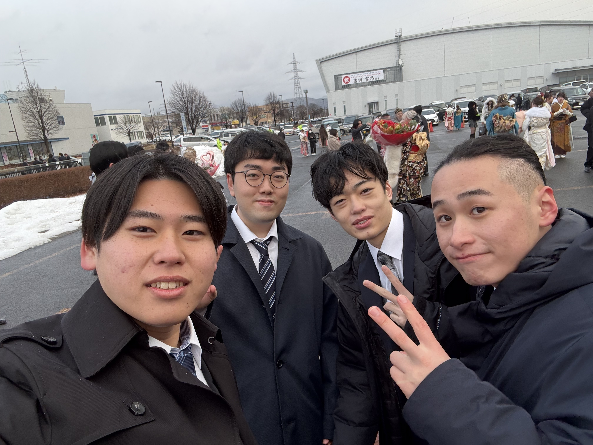

Profile

名前：玉山 氷龍（たまやま ひりゅう）
2006年1月27日生まれ、岩手県盛岡市出身。
MCL盛岡情報ビジネス＆デザイン専門学校の総合システム工学科に入学して、
たくさんの知識を身に着けています。
Skill
フロントエンド
- HTML / CSS ★★★★☆
- JavaScript ★★★☆☆
自主制作でHPを作成し、実践的に学習しています。
HTML/CSSと併用しながら学習中です。
バックエンド
- Python ★★★☆☆
- Java ★★☆☆☆
1年生から継続して学習しています。
2年生から学習を開始し、現在も勉強中です。
フレームワーク
- Django ★★☆☆☆
- Tkinter ★★★☆☆
- JavaFX ★★★☆☆
2年生前期に基礎を学びました。
データベースを使った課題制作を経験。
2年後半から学習し、現在も継続中です。
Works

ポケモン風ゲーム

High&Lowゲーム(推しver)

ショッピングアプリ